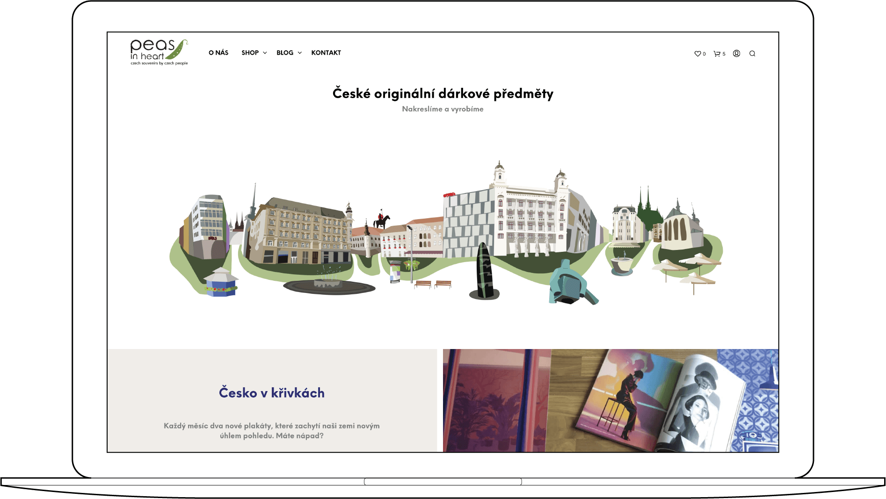
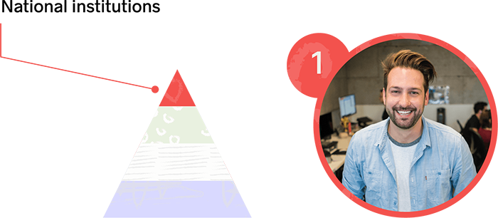
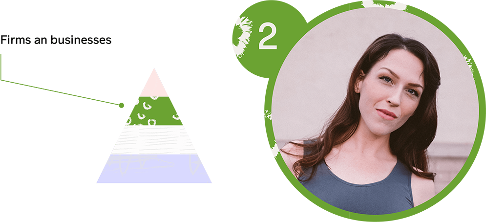
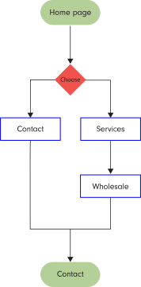

peas in heart
Peas in Heart is a design studio capturing Czech culture in illustrations. The studio creates custom illustrations for cities, regions, universities and businesses all over the country and creates retail products represented in over 30 stores.

ROLE
Research, UX Design, Prototyping, Strategy
ROLE
- Research
- Design
- Prototyping
- strategy
DELIVERABLES
User Personas, User Stories, User Flows, Content Strategy, Sketches, Wireframes, Usability Testing
TOOLS
- Paper & pen
- Adobe CC
- Colorable
overview
Peas in heart is a diverse opperation that services a wide range of customers that do business in different ways. The company sometimes struggles to be accessible to both wholesale and retail customers with varying wants and needs. This case study focuses on a front facing platform that makes accessing the companies services clear and manageabe to all users.

research
the market
We have identified four groups in the market that have unique needs. These include online retail shoppers, wholesale buyers, and institutions looking for custom design work for national institutions.

Each group has very specific needs and requires individual care. For example the top of the pyramid is a group of instutions that require custom design work for their offering. On the other hand firms prefer to add their exsiting logo and artwork to an existing product.

4 user personas
After running Peas in Heart design studio for over 4 years we were able to identify our personas and their needs. Each of these 4 personas are representing one segment mentioned in the marketresearch.
persona 1
PETER D.
Marketing Assistant at a university
One of Peter's roles is to welcome students from abroad. He gets a budget to purchase representative custom-made presents for arriving students. Peter has to spend the whole budget and get presents that represent not only the univeristy, but also the city.
user stories
As a user I want to...
- ... see the company qualifications
- ... know if the company is capable of design work suitable for my purpose
- ... contact a representative
user flows
→ As a user I want to I want to know if the company is capale of design work suitable to my purpose.
→ As a user I want to I want to contact a representative.

persona 2
ANNA R.
HR generalist at fin-tech startup in Prague
One of Anna's responsibilities is to make sure that partners and employees get representative presents. She has a small budget to purchase gifts. Since she works for start-up she wants to bring edgy presents to the company.
user stories
As a user I want to...
- ... buy representative presents
- ... add firms logo on the product
- ... contact the company
user flows
→ As a user I want to know if I can order branded presents
persona 3
OLA V.
Buyer for downtown book store
Ola is a senior buyer in a downtown bookstore. She likes to bring fresh ideas and souvenirs to the store. She likes to buy in small quantity and see what sells. She is a busy woman she wants to sellect products from a well-arranged catalog without commiting herself to big orders.
user stories
As a user I want to...
- ...see the sortiment I can purchase
- ...know what are wholesale prices
- ...contact a representative
user flows
→ contact a representative
persona 3
MAGDA M.
Medical student in Brno
Magda comes from a small town. She moved to Brno to study Medicine. She loves the city and wants to celebrate its genium loci. Marta has a lot of foreign friends that come via the erasmus program. She alway buys some souvenirs for them that remind them of the great time they had together while getting through school.
user stories
As a user I want to...
- ... purchase a product
- ... find pickup location
- ... review a size chart
user flows
→ find a pickup location
site map

prototype
sketches


visual design
typography

NEUE EINSTELLUNG
Neue Einstellung is a simple and geometric typeface with versatility in mind. The name is from the mechanical state of thinking: Einstellung.
RADNIKA
Radnika is a workhorse typeface. The name Radnika is from the word Radnik meaning worker. Peas' website is in the Czech language and Radnika provides full support for all specials characters.
color palette
why peas?
Peas in Heart is inspired by Johann Gregor Mendel the founder of genetics and his experiments with peas. A shade of "pea green" became the primary color for the brand.
The illustartions were inspired by marks in the notebook of J. G. Mendel combined with patterns inspired by other acpects of Czech lifestyle and history. I am a cofounder of the studio. This project started with an online store. After a while we noticed that we have another emerging user which is buyers from the national institutions. We lost this customer multiple times because we did not put enough research into this user’s needs. Our wholesale bussiness grew the fastest and has thus far been the primary focus of the compaines attention. Finally we discovered a new opportunity to help firms and businesses to represent their companies without a drawn out design process. As the comapny has grown, all of these users have become an impoirtant piece of the companies core business and the future. Now we focus on serving all users equaly and want to create more delightful experience. This project was an introduction to user experience and business strategy. I went through multiple roles during developement and ideation of the core strategy of the company. I have learned to never stop looking for new ways to execute ideas and be willing to risk and learn from our mistakes.illustrations
Mendel's notes


conclusion
self-reflection
other work

contact